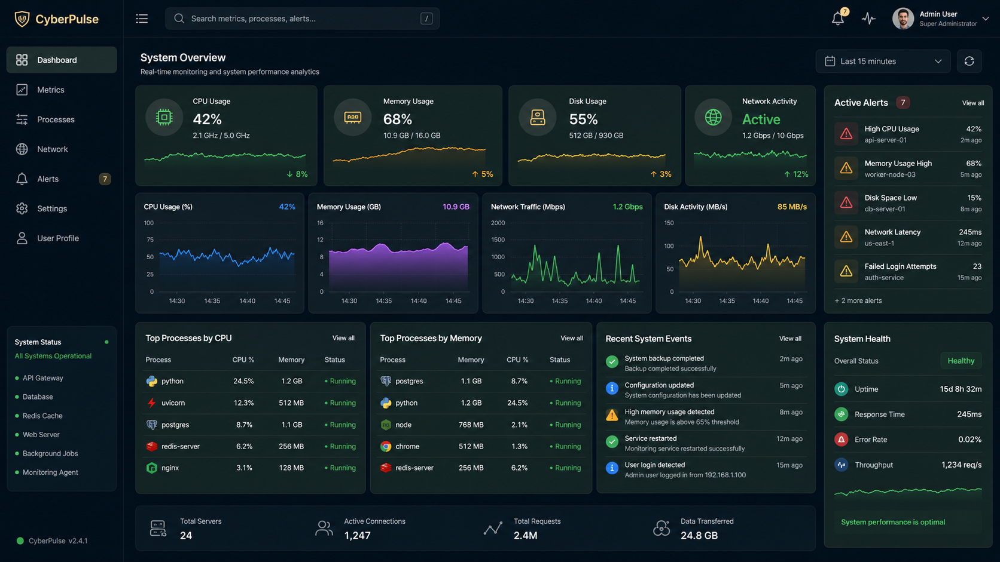

Real-Time Metrics
Monitor CPU, memory, storage, and network activity continuously.
CyberPulse provides real-time monitoring, analytics, alert management, and operational visibility for modern infrastructure environments.
Everything needed to monitor and manage infrastructure performance.
Monitor CPU, memory, storage, and network activity continuously.
Detect anomalies quickly with actionable notifications and alerts.
Analyze traffic patterns and infrastructure connectivity.
Customize monitoring thresholds, notifications, and preferences.
A modern interface built for performance monitoring.

Platform Availability
Continuous Monitoring
Metrics Collected
Alert Processing